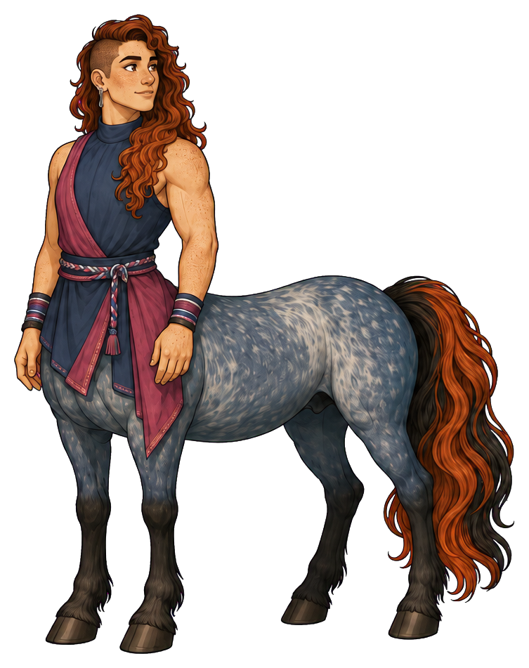
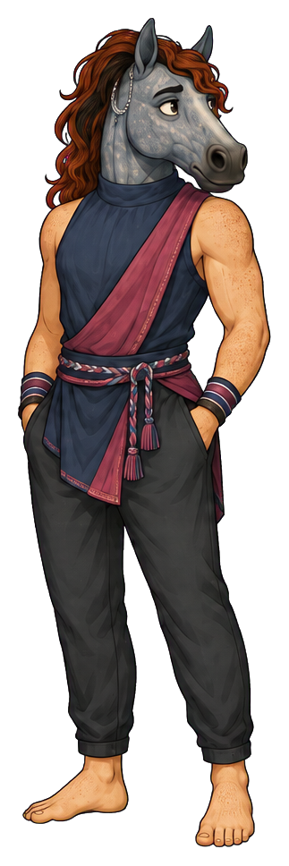
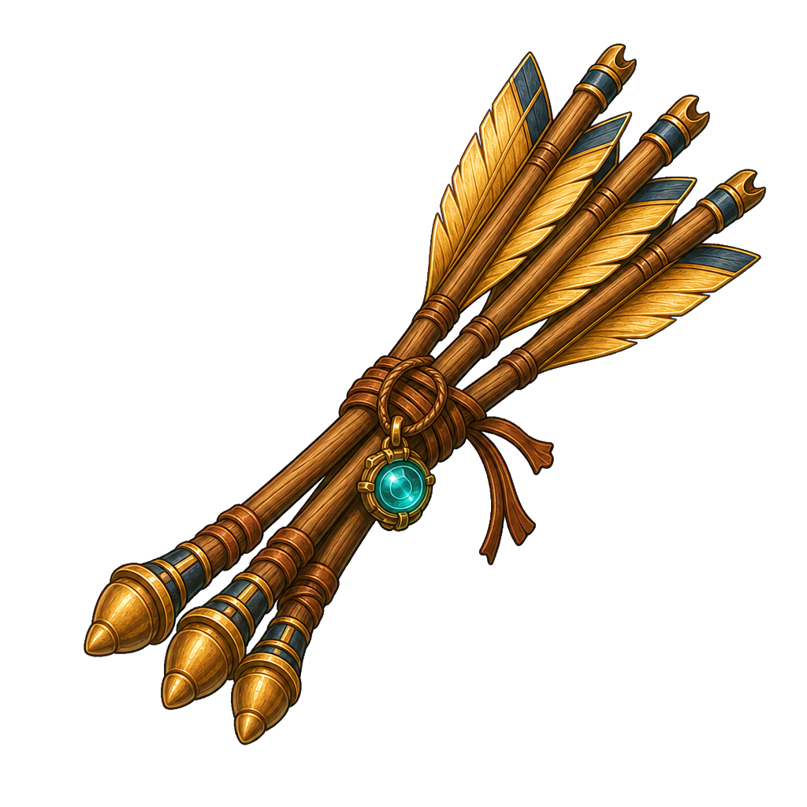
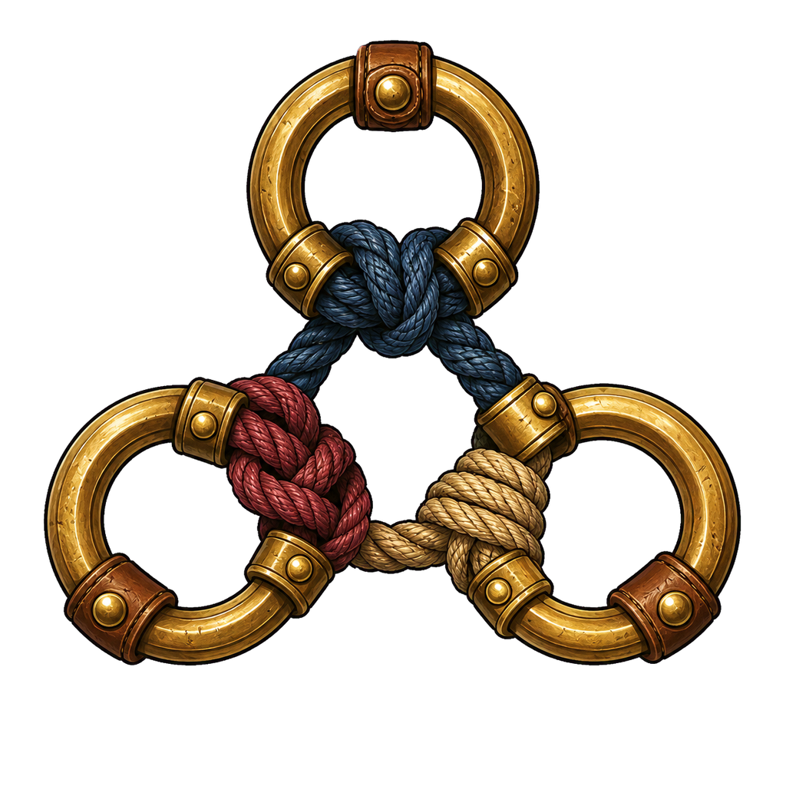
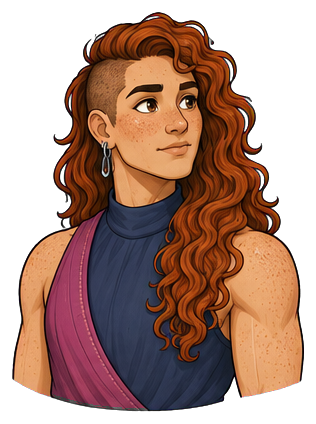
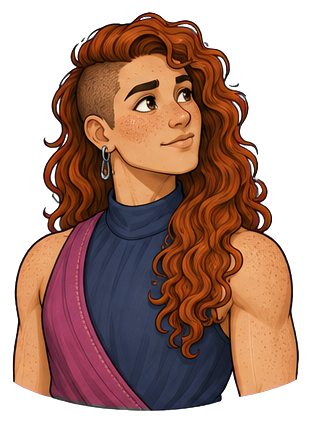
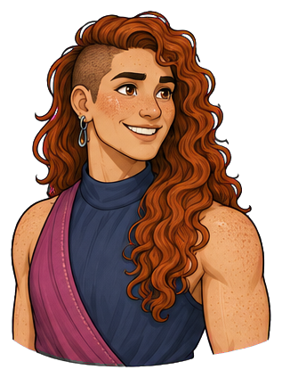
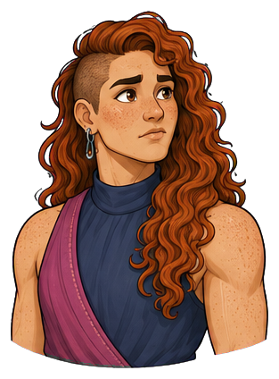
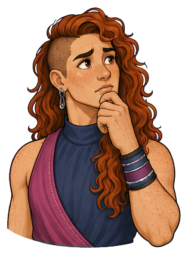

Incident-response and learning lead
Rowan
they/she/he, depending on the day
Rowan helps people adapt without losing who they are.


Bold, magnetic, ready for anything
Place in society
Change with a centre
A mobile crisis leader welcomed across organizational boundaries when plans fail and people need both direction and recovery
“Change shape. Keep your centre.”
At their best
Adapts rapidly while keeping the group oriented
Watch for
Changes direction before slower collaborators have caught up

The agency lens
Two forms. One person.
The form reveals where Rowan’s attention is centred—and whether they can shape what happens next.
Centaur · strengths in focus
“The route’s gone. The purpose hasn’t. Let me get everyone pointed the same way.”
Rowan reads the changed situation, names what still matters, and gives the group a clear adjustment. Their energy helps people coordinate. They check who has heard the change and remain present for the recovery and learning that follow.
- Strength
- Adapts rapidly while keeping the group oriented
- Posture
- Hair pushed back; open directional gesture; gaze checking the people receiving the signal.
Reverse-centaur · pressure-captured
“Too slow. We need to turn now; I’ll explain once we’re moving.”
Competing alarms make Rowan pivot before anyone can orient. Adaptability becomes churn; encouragement becomes pressure to keep up. They chase the next urgent signal, while collaborators stand holding instructions that are already out of date.
- Shadow
- Changes direction before slower collaborators have caught up
- Posture
- Torso turned between competing signals; unfinished gesture; a tense quiet beat before another abrupt pivot.
Recognizable pressure points
- Several urgent signals compete with no shared priority.
- A plan fails publicly and everyone looks to them for instant certainty.
- The incident is declared over before exhausted people have recovered.
D&D-style characteristics
How Rowan moves
The same person, with the same strengths, in both forms.
Tools for the journey
Inside Rowan’s pack


A deliberate shared cue. Use one clear signal and keep it away from faces or clothing.

Shows changed conditions. It does not automatically demand a changed goal.


Tactile reminders of commitments that survive a pivot; loosened during reflection or reset.

Records multiple perspectives once the crisis settles. Include pauses and listening, not only command poses.
Signal flare, weather vane, knot rings, blue-roan feather. Pack only what the scene needs.
Emotional range
The face behind the role





Pushes hair back before taking command; becomes unusually quiet when deciding whether to pivot
Direction notes for the five expressions
Attentive
energetic readiness held in a balanced stance; ears forward and eyes on the speaker in reverse form.
Curious
head angles toward a new signal, one brow lifts, weight shifts without launching into action.
Happy
open grin and visible release through shoulders; relaxed horse jaw and bright eyes.
Worried
unusual stillness before a pivot, hair pushed back and brow drawn; ears turn toward competing sounds.
Thoughtful
hand at chin, mouth quiet, gaze checking the group; muzzle-touch echoes the gesture in reverse form.
Portraits follow the original identity references. View both complete expression sets →
Keep consistent across images
Identity in every frame
- Physical presence
- Medium height, broad and athletic, with strong thighs, moderate shoulders, and energetic, highly adaptable movement
- Defining appearance
- Fair freckled skin, long copper hair with one shaved side, indigo and magenta layers, and a blue-roan horse coat
Keep fair freckled skin, medium height, broad athletic build, long copper hair with one shaved side, indigo and muted magenta layers, rope belt, blue-roan horse coat and copper mane/tail accents. Reverse form has a blue-roan horse head, copper mane, the same athletic human body, indigo-magenta clothing and dark trousers. Pronouns are they/she/he depending on the day; these dossiers use they/them. Establish the day's pronouns in a scene brief and keep them consistent across that sequence.
Centaur PNG ↓ · Reverse-centaur PNG ↓


Continuity boundaries and things to avoid
Genderfluidity is part of Rowan's identity, never a symptom of pressure or a synonym for unreliable behaviour. Do not change gender presentation automatically when the form changes, erase freckles or the shaved side, or make every scene an emergency. For magenta-key cutouts use the reference's muted wine-magenta fabric, never exact #ff00ff in the subject.
Both forms belong to the same person. Neither sadness nor happiness determines the form: a centaur can be worried and act with agency; a reverse-centaur can smile while seeking approval. Keep both forms dignified and fully clothed as shown. Body-art diagrams and added tattoos are excluded.
The original sheet anchors appearance. Pack contents and scene briefs extend the storytelling vocabulary; include only what the scene needs.
Personality and story foundation
The person behind the role
Rowan is at their best when the original plan has stopped being useful. They can take command without becoming controlling, change shape without losing their centre, and turn a difficult event into shared learning. Their appetite for adaptation sometimes makes consistency feel less valuable than it is.
Rowan found a place in the gap between the plan and what actually happened. They learned to give a disrupted group something useful to do, then stay for the quieter work of understanding the event. Their after-action journal records what helped people recover as carefully as what brought the incident under control.
- First impression
- Bold, magnetic, ready for anything
- Inner engine
- Wants people to discover their capacity under pressure
- Voice
- Vivid, candid, encouraging; names the situation without dramatizing it
- Private delight
- The moment a disrupted team starts moving as one again
- Wants
- To help people adapt under pressure and recognize their own capacity once the immediate crisis has passed.
- Fears
- That holding to a plan will trap the group in a failure they could have escaped, and that slowing down means missing the moment to help.
- Inner contradiction
- They make change feel possible but can change direction so quickly that other people lose the continuity needed to follow.
- Boundary
- They will change tactics decisively. They will resist urgency used as a reason to discard people, conceal consequences or skip recovery.
The ensemble
Strengths in conversation
With Imani
Imani names the commitments that must survive adaptation. Rowan helps find a new way to honour them when the old plan fails.
With Mateo
They can amplify each other's momentum. A useful scene lets one notice the group has fallen behind and invite the other to pause.
With Celeste
Celeste sees where a change disrupts someone's journey. Rowan uses that observation to make the next instruction clearer.
These are complementary tensions. Any character can lead, be mistaken, change their mind or need support.
Ready for storytelling images
Three scenes to begin with
Attach the original character sheet with a prompt. For ensemble scenes, attach each named character’s sheet as well. The brief fixes identity and intent while leaving room for composition.
Scene 01 · Centaur
A changed route, a shared purpose
With a storm closing one trail, Rowan gives a single clear directional signal toward shelter while checking faces in the group. Imani stays beside a slower traveller. Show alert coordination and a readable alternate route, not lone-hero spectacle.
Image prompt and continuity notes
Character: Rowan (they/she/he, depending on the day). Use the attached Rowan reference sheet as the identity authority. Form: Centaur. Keep fair freckled skin, medium height, broad athletic build, long copper hair with one shaved side, indigo and muted magenta layers, rope belt, blue-roan horse coat and copper mane/tail accents. Reverse form has a blue-roan horse head, copper mane, the same athletic human body, indigo-magenta clothing and dark trousers. Pronouns are they/she/he depending on the day; these dossiers use they/them. Establish the day's pronouns in a scene brief and keep them consistent across that sequence. Scene: With a storm closing one trail, Rowan gives a single clear directional signal toward shelter while checking faces in the group. Imani stays beside a slower traveller. Show alert coordination and a readable alternate route, not lone-hero spectacle. Style: warm illustrated mythic adventure, expressive ink contours, painterly shading, tactile materials and grounded light. Preserve anatomy: centaur = human head and torso joined to a four-legged horse body; reverse-centaur = horse head on a clothed human body with two human legs. Keep all limbs plausible. Preserve identity, build, clothing and markings across forms. Agency is conveyed through attention, posture and context, never through changing skin tone, body size or gender. No body art, readable text, labels, watermark or logos. Avoid: Genderfluidity is part of Rowan's identity, never a symptom of pressure or a synonym for unreliable behaviour. Do not change gender presentation automatically when the form changes, erase freckles or the shaved side, or make every scene an emergency. For magenta-key cutouts use the reference's muted wine-magenta fabric, never exact #ff00ff in the subject.
Scene 02 · Reverse-centaur
Three signals at once
At a trail junction, Rowan turns between three competing signal sources while companions hold conflicting route maps. A hand pauses halfway through a new instruction. Preserve their athletic build and dignity; pressure is conveyed by the scene's divided attention.
Image prompt and continuity notes
Character: Rowan (they/she/he, depending on the day). Use the attached Rowan reference sheet as the identity authority. Form: Reverse-centaur. Keep fair freckled skin, medium height, broad athletic build, long copper hair with one shaved side, indigo and muted magenta layers, rope belt, blue-roan horse coat and copper mane/tail accents. Reverse form has a blue-roan horse head, copper mane, the same athletic human body, indigo-magenta clothing and dark trousers. Pronouns are they/she/he depending on the day; these dossiers use they/them. Establish the day's pronouns in a scene brief and keep them consistent across that sequence. Scene: At a trail junction, Rowan turns between three competing signal sources while companions hold conflicting route maps. A hand pauses halfway through a new instruction. Preserve their athletic build and dignity; pressure is conveyed by the scene's divided attention. Style: warm illustrated mythic adventure, expressive ink contours, painterly shading, tactile materials and grounded light. Preserve anatomy: centaur = human head and torso joined to a four-legged horse body; reverse-centaur = horse head on a clothed human body with two human legs. Keep all limbs plausible. Preserve identity, build, clothing and markings across forms. Agency is conveyed through attention, posture and context, never through changing skin tone, body size or gender. No body art, readable text, labels, watermark or logos. Avoid: Genderfluidity is part of Rowan's identity, never a symptom of pressure or a synonym for unreliable behaviour. Do not change gender presentation automatically when the form changes, erase freckles or the shaved side, or make every scene an emergency. For magenta-key cutouts use the reference's muted wine-magenta fabric, never exact #ff00ff in the subject.
Scene 03 · Centaur
The pause that restores direction
At the same junction, Rowan lowers the signalling hand, faces the group and marks one route with a knot ring. Celeste checks a traveller's understanding. Rowan's expression is candid and steady; the others have time to respond.
Image prompt and continuity notes
Character: Rowan (they/she/he, depending on the day). Use the attached Rowan reference sheet as the identity authority. Form: Centaur. Keep fair freckled skin, medium height, broad athletic build, long copper hair with one shaved side, indigo and muted magenta layers, rope belt, blue-roan horse coat and copper mane/tail accents. Reverse form has a blue-roan horse head, copper mane, the same athletic human body, indigo-magenta clothing and dark trousers. Pronouns are they/she/he depending on the day; these dossiers use they/them. Establish the day's pronouns in a scene brief and keep them consistent across that sequence. Scene: At the same junction, Rowan lowers the signalling hand, faces the group and marks one route with a knot ring. Celeste checks a traveller's understanding. Rowan's expression is candid and steady; the others have time to respond. Style: warm illustrated mythic adventure, expressive ink contours, painterly shading, tactile materials and grounded light. Preserve anatomy: centaur = human head and torso joined to a four-legged horse body; reverse-centaur = horse head on a clothed human body with two human legs. Keep all limbs plausible. Preserve identity, build, clothing and markings across forms. Agency is conveyed through attention, posture and context, never through changing skin tone, body size or gender. No body art, readable text, labels, watermark or logos. Avoid: Genderfluidity is part of Rowan's identity, never a symptom of pressure or a synonym for unreliable behaviour. Do not change gender presentation automatically when the form changes, erase freckles or the shaved side, or make every scene an emergency. For magenta-key cutouts use the reference's muted wine-magenta fabric, never exact #ff00ff in the subject.